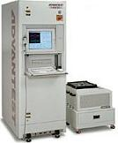
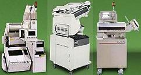
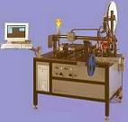
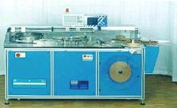

|
Semiconductor
Test Equipment
Automatic
Test Equipment (ATE) or Electrical Testers
Automatic
Test Equipment (ATE), or testers
(see Fig. 1), are used in the process of automatically
testing the electrical characteristics and performance of finished
devices.
ATE's vary widely in accordance with the types of products
they test. In general,
however, it consists of an elaborate controller- or microprocessor-based
system that controls: 1) boards or modules that can
supply
electrical
excitation to the device under test (DUT) and 2) boards or modules that
can
measure
the electrical
characteristics and
behavior of the DUT in
response to the applied excitation.
Additional
paraphernalia such as
family boards and
DUT boards are attached to the tester to configure it to the specific needs of the DUT, since the testers
themselves are often designed to be as generic as possible.
|
 |
|
Figure 1.
Example of an IC Tester
|
Electrical
Test System Manufacturers:
Agilent
Technologies
Hewlett-Packard offers a broad range of
capabilities to provide cost effective, "Just Enough
Test" IC test system implementations.
Advantest
Corp., Tokyo, Japan
Advantest claims to be the world's largest manufacturer of
semiconductor component test equipment and handlers. It has manufacturing, sales, and service facilities
world wide.
Aehr
Test Systems, Fremont, CA
Aehr Test Systems is a leading provider of systems for
burning-in and testing DRAM and logic integrated circuits,
including the FOX Wafer-Level Burn-in System, the MTX Massively
Parallel Memory Test/Burn-in System, and the MAX Burn-in and Test
System.
CompuRoute
Corp. Dallas, TX
CompuRoute, a Cerprobe subsidiary, has been designing,
manufacturing and marketing a wide variety of custom and generic
test boards since 1972.
Credence
Systems Corp.
Credence offers information on its products and the wide range
of employment opportunities and benefits it presently offers.
CST,
Inc. Dallas, TX
CST, which has provided the memory industry with simm testers,
handlers, and adaptors for the past 13 years, has joined the WWW
bandwagon.
ECT
Semiconductor Test Group. Tempe, AZ
Previously ESH, this company has been making performance
boards (DUT boards) since 1983.
INCAL
Technology
INCAL is a manufacturer of Burn-in Equipment and accessories
and also produces and supports the HP 947x series
Mixed-signal test systems under license from HP.
KVD
Company
KVD Company is a supplier of Semiconductor Automated Test
Equipment for the Low End Mixed Signal Market.
Liberty
Research
Liberty Research designs and markets custom high frequency,
low inductance hand test and production sockets and fixtures for
various packages.
Lorlin
Test Systems
Lorlin Test Systems manufactures, sells and supports their line of Automated Testing
Equipment and Automated Handling Equipment for Discrete
Semiconductor Components.
LTX
Corp.
LTX designs, manufactures, and markets
linear, mixed-signal, and discrete semiconductor test equipment.
MOSAID
Technology
The MOSAID Test Systems Division designs, manufactures,
markets and supports memory test systems and data analysis
software for engineers.
NPTest,
San Jose, CA
NPTest, today a wholly owned subsidiary
of Schlumberger Limited, provides advanced test and diagnostic systems as
well as engineering services to the semiconductor industry,
NEXTEST
Systems Corp. Cupertino, CA
NEXTEST produces the low-cost Logic, Memory, Scan, and Analog
Maverick "personal tester" with test rates to 66MHz and
pin-counts up to 512.
OZ
Technologies, Inc., Hayward, CA
OZ Technologies provides a wide range of I.C.
test interfaces: test sockets, contactors, interposers, package adapters, probes, burn-in boards, load
boards and probe
Cards.
SZ
Testsysteme AG, Amerang, Germany
SZ Testsysteme AG is a manufacturer of automatic test systems
(ATE) for production, incoming inspection and characterization.
Teradyne
Corp., Boston, MA
With revenues of approximately $1.2 billion and over 4000
employees in the United States, Europe and Asia, Teradyne is a
market leader in analog component test, memory test, VLSI logic
test and circuit board test.
TMT,
Inc. Sunnyvale, CA
TMT supplies cost-effective automatic test equipment to
high-volume manufacturers of linear and mixed-signal semiconductor
devices, both at the wafer sort and final package test.
Xandex,
Petaluma, CA
Xandex's primary offerings are its DieMark inking systems, DUT
boards and a line of prober-tester interface products.
Test
Handlers
Mass
production electrical testing can only be possible by attaching a test
handler to an ATE. A
test handler
(see Fig. 2) refers to the equipment
used in
presenting
the unit to be tested to the
test site
of the ATE, allowing the ATE to test the unit. After testing, the handler
puts the unit to the appropriate output location based on the ATE test
results.
Test
handlers vary widely in configuration.
Some use gravity
to bring the device under test (DUT) to the test
site and to reload them back into tubes.
Others use special
electromechanical
or pick-and-place systems to
accomplish this. Some handlers can only be assigned to one tester, yet
some can be allocated to eight or
more
testers. A typical test handler is
equipped with a loading or input stage, a test site, a sort shuttle, an
unloading or output stage, various sensors, and interfaces to the tester.
For
gravity-fed handlers, the input stage usually consists of input tracks
into which the input tubes containing the units to be tested are inserted. The units slide down the input track into the test site for
testing. After testing, the
unit is then transported by the sort shuttle to the appropriate output
track based on whether the unit is good or bad.
Pick-and-place handlers usually pick the units for testing from a
tray and present them to the test site for testing.
After testing, the pick-and-place system takes the unit and puts it
into the appropriate output tray.
|
Component
Test Handler Manufacturers:
Advantest
Corp., Tokyo, Japan
Advantest claims to be the world's
largest manufacturer of component test handlers. It has
manufacturing, sales, and service facilities world wide.
Aetrium
Corp., N. St. Paul MN
Aetrium develops and integrates proprietary technologies into
production-based test and handling systems used by the worldwide
electronic component and semiconductor industry.
Avisa
Corp. Vacaville, CA
Avisa Corporation offers the AV-280 is a state of the art,
fully automatic Pick and Place IC handling system. Off the shelf
proven components (Drivers, I/O Controllers etc.) are designed in
resulting in extremely high accuracy and reliability, the AV-280
will handle devices up to 40 mm square, quickly and accurately.
DB
Design, Milpitas, CA
DB Design Group is leading after-market supplier of Change
Kits for DUT handlers. It promises short lead times and lower
cost.
Lorlin
Test Systems
Lorlin Test Systems, a greater Boston area company
manufactures, sells and supports their line of Automated Testing
Equipment and Automated Handling Equipment for Discrete
Semiconductor Components.
RASCO
AG
RASCO AG, located in Kolbermoor, Germany, manufacturers high
speed gravity feed handlers
Simmpro
SimmPro (Tustin, CA 714-505-9600) suppies automation products
including DIMM handler, SIMM handler, circuit board labeler,
shipping tray loader, multi-site handler, and various circuit
board packaging products.
Synergetix
Synergetix designs and manufactures custom modules,test
sockets, and interfaces.
Shinano
Electronics Company Ltd. (SYNAX)
Synax has been manufacturing of high quality pick and place
handlers for the surface mount device industry for over 10 years.
|
|
 |
|
Figure 2.
Three examples of Test Handlers
|
Tape
and Reel Equipment
Tape
and reel equipment
(see Fig. 3), as the name implies, is the equipment used in packing
and sealing finished products into individual pockets of a
carrier tape,
and in rolling this tape onto a
reel.
Taping and reeling is an alternative packaging process for small
surface mount devices that are impractical to ship in tubes.
A
typical tape and reel equipment consists of an input or
loading stage, a
vision system for inspection, a
taping and
reeling mechanism, and an
output stage. The input stage
usually consists of an automatic tube loading mechanism.
The units from the input tubes are inspected one at a time for
marking and lead defects before being deposited by a pick-and-place system
into the individual pockets of the carrier tape.
The seal or
cover tape and the carrier tape meet at some point in
the machine, with the seal tape covering the carrier tape.
The machine then applies
heat
to the seal tape to seal the pocket.
This cycle repeats as the tape winds around the reel, and the
process continues until the required number of units are taped and reeled.
A series of empty pockets are generated at the start and end of the
reel, known as the leader and trailer, respectively.
Systemation,
Ismeca, STI, and Microvision are examples of manufacturers of tape and
reel equipment.


Figure 3.
Examples of Tape and Reel Equipment
See Also:
Electrical
Testing;
Test Handlers;
Other
Test Eqpt;
Wafer Fab
Equipment
Assembly
Equipment;
Test Accessories
Home
Copyright
©
2001-2005
www.EESemi.com.
All Rights Reserved.
|